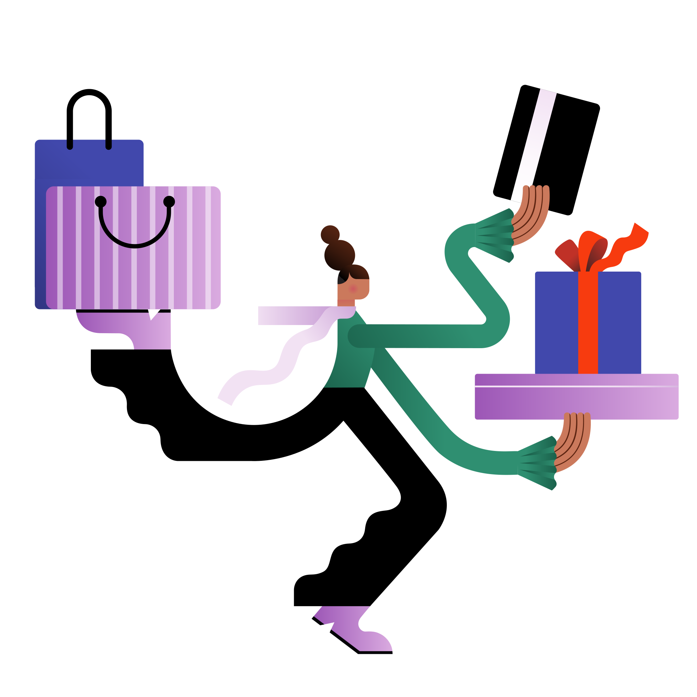
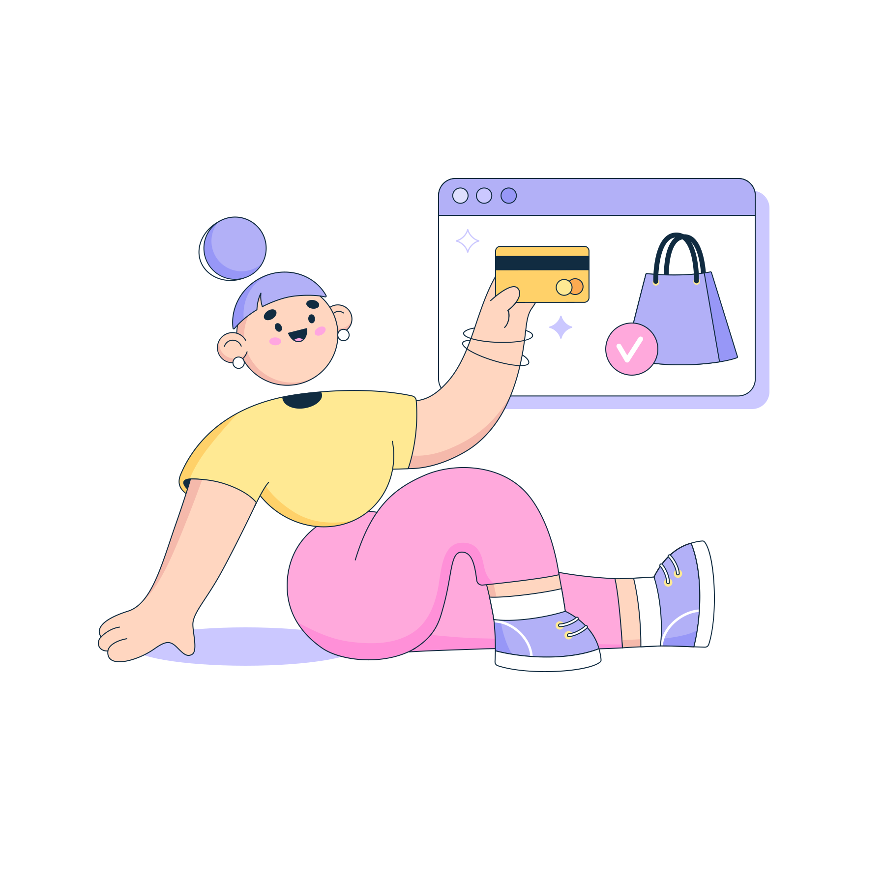
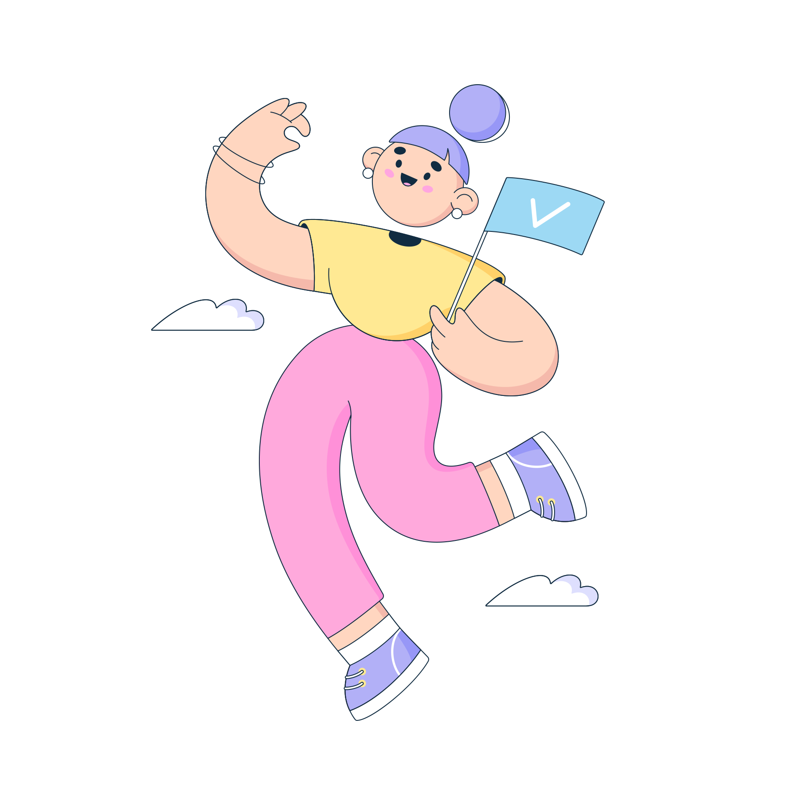

Sistemas de pago electrónico
Son una forma cada vez más popular de realizar transacciones en línea de forma segura y conveniente. Básicamente, un sistema de pago electrónico es un software que permite a los usuarios realizar pagos y transferencias de dinero a través de Internet o de dispositivos móviles.
Cajeros electrónicos
Son dispositivos electrónicos que permiten a los usuarios realizar transacciones bancarias sin la necesidad de acudir a una sucursal bancaria o interactuar con un cajero humano.
Los usuarios pueden utilizarlos para realizar una variedad de transacciones, como retirar efectivo, depositar cheques y transferir fondos entre cuentas.
.svg)
Dinero electrónico
Es un medio de pago digital que se utiliza para realizar transacciones financieras a través de internet u otros medios electrónicos. Es un sistema de pago que funciona a través de una cuenta electrónica, que puede ser recargada con dinero desde una cuenta bancaria, una tarjeta de crédito o débito, o mediante una transferencia.
Cheques electrónicos
También conocidos como cheques virtuales o e-cheques, son una forma electrónica de pago que funciona de manera similar a los cheques tradicionales. En lugar de un papel físico, el cheque electrónico se emite y se procesa digitalmente.
Para utilizar un cheque electrónico, el pagador debe proporcionar la información necesaria, como el número de cuenta bancaria y la cantidad a pagar, a través de un sitio web o una aplicación móvil. El banco emisor del cheque electrónico luego transfiere los fondos al banco receptor del destinatario.

Tarjetas de Crédito y debito
Son formas de pago electrónico que permiten a los consumidores realizar compras sin efectivo. Las tarjetas de crédito permiten a los usuarios pedir prestado dinero para hacer una compra, mientras que las tarjetas de débito permiten a los usuarios gastar solo el dinero que ya tienen en su cuenta bancaria.
Las tarjetas de crédito
Estas funcionan mediante un sistema de crédito rotativo. Los titulares de tarjetas pueden utilizar un límite de crédito establecido por la institución financiera emisora para hacer compras y luego pagar el saldo total o parcial de la tarjeta en una fecha determinada. Si el titular de la tarjeta no paga el saldo total, se le cobrará intereses sobre el saldo adeudado.
Las tarjetas de débito
Estas permiten a los usuarios gastar solo el dinero que tienen en su cuenta bancaria. Los pagos se deducen directamente de la cuenta del titular de la tarjeta. Al igual que las tarjetas de crédito, las tarjetas de débito son emitidas por instituciones financieras y pueden tener una variedad de características, como recompensas por gastos o protección contra fraudes.
Arrastra las palabras en el orden correcto
| Confirmación del pago |
| Realización de pagos |
| Selección del proveedor |
| Verificación |
| Registro |
| Depósito de fondos |
Felicidades, llegaste al final.
Vamos a realizar una pequeña prueba para reforzar lo aprendido:
- 6 Preguntas (20 segundos cada una)
- Acumula puntos por pregunta correcta
- 200 segundos en el reloj
- Preguntas aleatorias
- Tu resultado al final

- 6 Preguntas (20 segundos cada una)
- Acumula puntos por pregunta correcta
- 200 segundos en el reloj
- Preguntas aleatorias
- Tu resultado al final